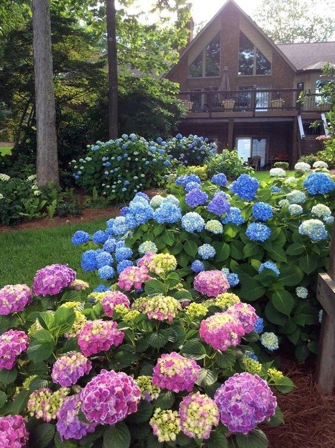
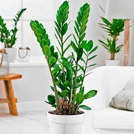
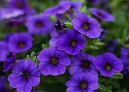

Gartenziya, zemiyokulkas, va petuniya gullari populyar gullar turidir va ko'pgina odamlar tomonidan bag'ishlanadi. Ularning har biri o'zining xususiyatlari va ulug'ligi bilan ajralib turadi: 1.Gartenziya: Gartenziya, yoki "Zinnia", Mexikodan kelib chiqqan tili bilan "tarzdan joy olgan" ma'nolarini bildiradi. Ular katta, rangli qoralar bilan namoyon bo'lgan o'simliklardir. Gartenziyalar yil boshidan qishgacha bo'lgan uzun muddatli gullardir va ko'p xil turlarda mavjud bo'lib, kichik qo'l o'lchamidan katta qo'l o'lchamiga bo'lgan odamlar uchun mos ravishda mavjud. 2.Zemiyokulkas: Zemiyokulkas, yoki "Chrysanthemum", jahon bo'ylab mashhur bo'lgan o'simliklardan biridir. U o'simliklar qatorining yetimligi bilan ajralib turadi. Bu gullar qizil, sariq, oq, va boshqa ko'p o'xshash ranglarda bo'lishi mumkin. Ular ko'pgina hamma fasonda bog'lab turiladi va shuningdek qadimiy xalq o'ylaganidek, bu gullar sog'liqni va barakatni anglatadi. 3.Petuniya: Petuniya gullari o'simlik turlari oilasiga mansub bo'lgan, zamonaviy daraxtlar. Ularning kichik qo'l o'lchamli o'simliklari ko'pgina bahorda va yozda ekinlar bilan topiladi. Ular yashil, sariq, qizil, yashil, va boshqa ko'p rangli qoralar bilan namoyon bo'lishi mumkin. Petuniyalar ba'zi variantlari suv ustida yashashadi, boshqalari esa quru yerlarda ko'tariladi. Bu gullar o'zining o'simlik ko'rib chiqarish turi, ranglari, qoldiq va boshqa xususiyatlariga ko'ra bir-biridan farq qiladi. Ular og'ir tozaligi bilan xilma-xil chiqiladi va ko'pgina joylarda, xususan bog'larda, bog'larda va urug'lar bilan suv ostiga yopiladi.
  